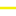

<!doctype html>
<html lang="en">
    <head>
        <meta charset="utf-8">
        <meta http-equiv="X-UA-Compatible" content="IE=edge">
        <meta name="viewport" content="initial-scale=1,user-scalable=no,maximum-scale=1,width=device-width">
        <meta name="mobile-web-app-capable" content="yes">
        <meta name="apple-mobile-web-app-capable" content="yes">
        <link rel="stylesheet" href="css/leaflet.css">
        <link rel="stylesheet" href="css/L.Control.Layers.Tree.css">
        <link rel="stylesheet" href="css/qgis2web.css">
        <link rel="stylesheet" href="css/fontawesome-all.min.css">
        <style>
        html, body, #map {
            width: 100%;
            height: 100%;
            padding: 0;
            margin: 0;
        }
        </style>
        <title></title>
    </head>
    <body>
        <div id="map">
        </div>
        <script src="js/qgis2web_expressions.js"></script>
        <script src="js/leaflet.js"></script>
        <script src="js/L.Control.Layers.Tree.min.js"></script>
        <script src="js/leaflet.rotatedMarker.js"></script>
        <script src="js/leaflet.pattern.js"></script>
        <script src="js/leaflet-hash.js"></script>
        <script src="js/Autolinker.min.js"></script>
        <script src="js/rbush.min.js"></script>
        <script src="js/labelgun.min.js"></script>
        <script src="js/labels.js"></script>
        <script src="data/Bhugoan_Water_pipes_2.js"></script>
        <script src="data/Bhugoan_Water_Tanks_3.js"></script>
        <script src="data/Bhugoan_Water_Junction_4.js"></script>
        <script src="data/Bhugoan_Water_reservoirs_5.js"></script>
        <script>
        var map = L.map('map', {
            zoomControl:false, maxZoom:28, minZoom:1
        }).fitBounds([[18.472152455160657,73.7176089563356],[18.524761289662404,73.80068541126332]]);
        var hash = new L.Hash(map);
        map.attributionControl.setPrefix('<a href="https://github.com/tomchadwin/qgis2web" target="_blank">qgis2web</a> &middot; <a href="https://leafletjs.com" title="A JS library for interactive maps">Leaflet</a> &middot; <a href="https://qgis.org">QGIS</a>');
        var autolinker = new Autolinker({truncate: {length: 30, location: 'smart'}});
        // remove popup's row if "visible-with-data"
        function removeEmptyRowsFromPopupContent(content, feature) {
         var tempDiv = document.createElement('div');
         tempDiv.innerHTML = content;
         var rows = tempDiv.querySelectorAll('tr');
         for (var i = 0; i < rows.length; i++) {
             var td = rows[i].querySelector('td.visible-with-data');
             var key = td ? td.id : '';
             if (td && td.classList.contains('visible-with-data') && feature.properties[key] == null) {
                 rows[i].parentNode.removeChild(rows[i]);
             }
         }
         return tempDiv.innerHTML;
        }
        // add class to format popup if it contains media
		function addClassToPopupIfMedia(content, popup) {
			var tempDiv = document.createElement('div');
			tempDiv.innerHTML = content;
			if (tempDiv.querySelector('td img')) {
				popup._contentNode.classList.add('media');
					// Delay to force the redraw
					setTimeout(function() {
						popup.update();
					}, 10);
			} else {
				popup._contentNode.classList.remove('media');
			}
		}
        var zoomControl = L.control.zoom({
            position: 'topleft'
        }).addTo(map);
        var bounds_group = new L.featureGroup([]);
        function setBounds() {
        }
        map.createPane('pane_GoogleMaps_0');
        map.getPane('pane_GoogleMaps_0').style.zIndex = 400;
        var layer_GoogleMaps_0 = L.tileLayer('https://mt1.google.com/vt/lyrs=m&x={x}&y={y}&z={z}', {
            pane: 'pane_GoogleMaps_0',
            opacity: 1.0,
            attribution: '',
            minZoom: 1,
            maxZoom: 28,
        });
        layer_GoogleMaps_0;
        map.addLayer(layer_GoogleMaps_0);
        map.createPane('pane_GoogleSatellite_1');
        map.getPane('pane_GoogleSatellite_1').style.zIndex = 401;
        var layer_GoogleSatellite_1 = L.tileLayer('https://mt1.google.com/vt/lyrs=s&x={x}&y={y}&z={z}', {
            pane: 'pane_GoogleSatellite_1',
            opacity: 1.0,
            attribution: '',
            minZoom: 1,
            maxZoom: 28,
        });
        layer_GoogleSatellite_1;
        map.addLayer(layer_GoogleSatellite_1);
        function pop_Bhugoan_Water_pipes_2(feature, layer) {
            var popupContent = '<table>\
                    <tr>\
                        <th scope="row">diameter</th>\
                        <td>' + (feature.properties['diameter'] !== null ? autolinker.link(feature.properties['diameter'].toLocaleString()) : '') + '</td>\
                    </tr>\
                    <tr>\
                        <th scope="row">roughness</th>\
                        <td>' + (feature.properties['roughness'] !== null ? autolinker.link(feature.properties['roughness'].toLocaleString()) : '') + '</td>\
                    </tr>\
                    <tr>\
                        <th scope="row">minorloss</th>\
                        <td>' + (feature.properties['minorloss'] !== null ? autolinker.link(feature.properties['minorloss'].toLocaleString()) : '') + '</td>\
                    </tr>\
                </table>';
            var content = removeEmptyRowsFromPopupContent(popupContent, feature);
			layer.on('popupopen', function(e) {
				addClassToPopupIfMedia(content, e.popup);
			});
			layer.bindPopup(content, { maxHeight: 400 });
        }

        function style_Bhugoan_Water_pipes_2_0() {
            return {
                pane: 'pane_Bhugoan_Water_pipes_2',
                opacity: 1,
                color: 'rgba(243,239,4,1.0)',
                dashArray: '',
                lineCap: 'square',
                lineJoin: 'bevel',
                weight: 3.0,
                fillOpacity: 0,
                interactive: true,
            }
        }
        map.createPane('pane_Bhugoan_Water_pipes_2');
        map.getPane('pane_Bhugoan_Water_pipes_2').style.zIndex = 402;
        map.getPane('pane_Bhugoan_Water_pipes_2').style['mix-blend-mode'] = 'normal';
        var layer_Bhugoan_Water_pipes_2 = new L.geoJson(json_Bhugoan_Water_pipes_2, {
            attribution: '',
            interactive: true,
            dataVar: 'json_Bhugoan_Water_pipes_2',
            layerName: 'layer_Bhugoan_Water_pipes_2',
            pane: 'pane_Bhugoan_Water_pipes_2',
            onEachFeature: pop_Bhugoan_Water_pipes_2,
            style: style_Bhugoan_Water_pipes_2_0,
        });
        bounds_group.addLayer(layer_Bhugoan_Water_pipes_2);
        map.addLayer(layer_Bhugoan_Water_pipes_2);
        function pop_Bhugoan_Water_Tanks_3(feature, layer) {
            var popupContent = '<table>\
                    <tr>\
                        <th scope="row">elevation</th>\
                        <td>' + (feature.properties['elevation'] !== null ? autolinker.link(feature.properties['elevation'].toLocaleString()) : '') + '</td>\
                    </tr>\
                    <tr>\
                        <th scope="row">initlevel</th>\
                        <td>' + (feature.properties['initlevel'] !== null ? autolinker.link(feature.properties['initlevel'].toLocaleString()) : '') + '</td>\
                    </tr>\
                    <tr>\
                        <th scope="row">minlevel</th>\
                        <td>' + (feature.properties['minlevel'] !== null ? autolinker.link(feature.properties['minlevel'].toLocaleString()) : '') + '</td>\
                    </tr>\
                    <tr>\
                        <th scope="row">maxlevel</th>\
                        <td>' + (feature.properties['maxlevel'] !== null ? autolinker.link(feature.properties['maxlevel'].toLocaleString()) : '') + '</td>\
                    </tr>\
                    <tr>\
                        <th scope="row">diameter</th>\
                        <td>' + (feature.properties['diameter'] !== null ? autolinker.link(feature.properties['diameter'].toLocaleString()) : '') + '</td>\
                    </tr>\
                    <tr>\
                        <th scope="row">minvolume</th>\
                        <td>' + (feature.properties['minvolume'] !== null ? autolinker.link(feature.properties['minvolume'].toLocaleString()) : '') + '</td>\
                    </tr>\
                    <tr>\
                        <th scope="row">volumecurv</th>\
                        <td>' + (feature.properties['volumecurv'] !== null ? autolinker.link(feature.properties['volumecurv'].toLocaleString()) : '') + '</td>\
                    </tr>\
                </table>';
            var content = removeEmptyRowsFromPopupContent(popupContent, feature);
			layer.on('popupopen', function(e) {
				addClassToPopupIfMedia(content, e.popup);
			});
			layer.bindPopup(content, { maxHeight: 400 });
        }

        function style_Bhugoan_Water_Tanks_3_0() {
            return {
                pane: 'pane_Bhugoan_Water_Tanks_3',
                radius: 4.399999999999997,
                opacity: 1,
                color: 'rgba(61,128,53,1.0)',
                dashArray: '',
                lineCap: 'butt',
                lineJoin: 'miter',
                weight: 2.0,
                fill: true,
                fillOpacity: 1,
                fillColor: 'rgba(84,176,74,1.0)',
                interactive: true,
            }
        }
        map.createPane('pane_Bhugoan_Water_Tanks_3');
        map.getPane('pane_Bhugoan_Water_Tanks_3').style.zIndex = 403;
        map.getPane('pane_Bhugoan_Water_Tanks_3').style['mix-blend-mode'] = 'normal';
        var layer_Bhugoan_Water_Tanks_3 = new L.geoJson(json_Bhugoan_Water_Tanks_3, {
            attribution: '',
            interactive: true,
            dataVar: 'json_Bhugoan_Water_Tanks_3',
            layerName: 'layer_Bhugoan_Water_Tanks_3',
            pane: 'pane_Bhugoan_Water_Tanks_3',
            onEachFeature: pop_Bhugoan_Water_Tanks_3,
            pointToLayer: function (feature, latlng) {
                var context = {
                    feature: feature,
                    variables: {}
                };
                return L.circleMarker(latlng, style_Bhugoan_Water_Tanks_3_0(feature));
            },
        });
        bounds_group.addLayer(layer_Bhugoan_Water_Tanks_3);
        map.addLayer(layer_Bhugoan_Water_Tanks_3);
        function pop_Bhugoan_Water_Junction_4(feature, layer) {
            var popupContent = '<table>\
                    <tr>\
                        <th scope="row">id</th>\
                        <td>' + (feature.properties['id'] !== null ? autolinker.link(feature.properties['id'].toLocaleString()) : '') + '</td>\
                    </tr>\
                    <tr>\
                        <th scope="row">elevation</th>\
                        <td>' + (feature.properties['elevation'] !== null ? autolinker.link(feature.properties['elevation'].toLocaleString()) : '') + '</td>\
                    </tr>\
                    <tr>\
                        <th scope="row">pattern1</th>\
                        <td>' + (feature.properties['pattern1'] !== null ? autolinker.link(feature.properties['pattern1'].toLocaleString()) : '') + '</td>\
                    </tr>\
                    <tr>\
                        <th scope="row">desc</th>\
                        <td>' + (feature.properties['desc'] !== null ? autolinker.link(feature.properties['desc'].toLocaleString()) : '') + '</td>\
                    </tr>\
                </table>';
            var content = removeEmptyRowsFromPopupContent(popupContent, feature);
			layer.on('popupopen', function(e) {
				addClassToPopupIfMedia(content, e.popup);
			});
			layer.bindPopup(content, { maxHeight: 400 });
        }

        function style_Bhugoan_Water_Junction_4_0() {
            return {
                pane: 'pane_Bhugoan_Water_Junction_4',
                radius: 4.0,
                opacity: 1,
                color: 'rgba(35,35,35,1.0)',
                dashArray: '',
                lineCap: 'butt',
                lineJoin: 'miter',
                weight: 1,
                fill: true,
                fillOpacity: 1,
                fillColor: 'rgba(152,125,183,1.0)',
                interactive: true,
            }
        }
        map.createPane('pane_Bhugoan_Water_Junction_4');
        map.getPane('pane_Bhugoan_Water_Junction_4').style.zIndex = 404;
        map.getPane('pane_Bhugoan_Water_Junction_4').style['mix-blend-mode'] = 'normal';
        var layer_Bhugoan_Water_Junction_4 = new L.geoJson(json_Bhugoan_Water_Junction_4, {
            attribution: '',
            interactive: true,
            dataVar: 'json_Bhugoan_Water_Junction_4',
            layerName: 'layer_Bhugoan_Water_Junction_4',
            pane: 'pane_Bhugoan_Water_Junction_4',
            onEachFeature: pop_Bhugoan_Water_Junction_4,
            pointToLayer: function (feature, latlng) {
                var context = {
                    feature: feature,
                    variables: {}
                };
                return L.circleMarker(latlng, style_Bhugoan_Water_Junction_4_0(feature));
            },
        });
        bounds_group.addLayer(layer_Bhugoan_Water_Junction_4);
        map.addLayer(layer_Bhugoan_Water_Junction_4);
        function pop_Bhugoan_Water_reservoirs_5(feature, layer) {
            var popupContent = '<table>\
                    <tr>\
                        <td colspan="2"><strong>id</strong><br />' + (feature.properties['id'] !== null ? autolinker.link(feature.properties['id'].toLocaleString()) : '') + '</td>\
                    </tr>\
                    <tr>\
                        <th scope="row">head</th>\
                        <td>' + (feature.properties['head'] !== null ? autolinker.link(feature.properties['head'].toLocaleString()) : '') + '</td>\
                    </tr>\
                    <tr>\
                        <th scope="row">desc</th>\
                        <td>' + (feature.properties['desc'] !== null ? autolinker.link(feature.properties['desc'].toLocaleString()) : '') + '</td>\
                    </tr>\
                </table>';
            var content = removeEmptyRowsFromPopupContent(popupContent, feature);
			layer.on('popupopen', function(e) {
				addClassToPopupIfMedia(content, e.popup);
			});
			layer.bindPopup(content, { maxHeight: 400 });
        }

        function style_Bhugoan_Water_reservoirs_5_0() {
            return {
                pane: 'pane_Bhugoan_Water_reservoirs_5',
                radius: 4.4,
                opacity: 1,
                color: 'rgba(35,35,35,1.0)',
                dashArray: '',
                lineCap: 'butt',
                lineJoin: 'miter',
                weight: 1,
                fill: true,
                fillOpacity: 1,
                fillColor: 'rgba(255,158,23,1.0)',
                interactive: true,
            }
        }
        map.createPane('pane_Bhugoan_Water_reservoirs_5');
        map.getPane('pane_Bhugoan_Water_reservoirs_5').style.zIndex = 405;
        map.getPane('pane_Bhugoan_Water_reservoirs_5').style['mix-blend-mode'] = 'normal';
        var layer_Bhugoan_Water_reservoirs_5 = new L.geoJson(json_Bhugoan_Water_reservoirs_5, {
            attribution: '',
            interactive: true,
            dataVar: 'json_Bhugoan_Water_reservoirs_5',
            layerName: 'layer_Bhugoan_Water_reservoirs_5',
            pane: 'pane_Bhugoan_Water_reservoirs_5',
            onEachFeature: pop_Bhugoan_Water_reservoirs_5,
            pointToLayer: function (feature, latlng) {
                var context = {
                    feature: feature,
                    variables: {}
                };
                return L.circleMarker(latlng, style_Bhugoan_Water_reservoirs_5_0(feature));
            },
        });
        bounds_group.addLayer(layer_Bhugoan_Water_reservoirs_5);
        map.addLayer(layer_Bhugoan_Water_reservoirs_5);
        var baseMaps = {};
        var overlaysTree = [
            {label: ' Bhugoan_Water_reservoirs', layer: layer_Bhugoan_Water_reservoirs_5},
            {label: ' Bhugoan_Water_Junction', layer: layer_Bhugoan_Water_Junction_4},
            {label: ' Bhugoan_Water_Tanks', layer: layer_Bhugoan_Water_Tanks_3},
            {label: ' Bhugoan_Water_pipes', layer: layer_Bhugoan_Water_pipes_2},
            {label: "Google Satellite", layer: layer_GoogleSatellite_1},
            {label: "Google Maps", layer: layer_GoogleMaps_0},]
        var lay = L.control.layers.tree(null, overlaysTree,{
            //namedToggle: true,
            //selectorBack: false,
            //closedSymbol: '&#8862; &#x1f5c0;',
            //openedSymbol: '&#8863; &#x1f5c1;',
            //collapseAll: 'Collapse all',
            //expandAll: 'Expand all',
            collapsed: false, 
        });
        lay.addTo(map);
        setBounds();
        </script>
    </body>
</html>
